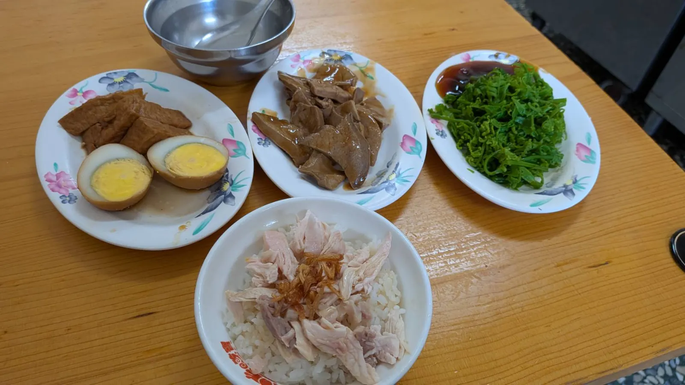
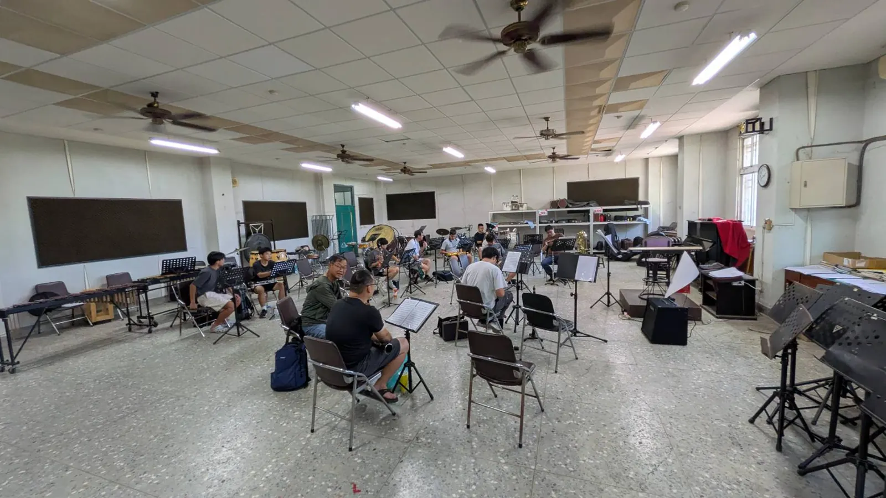
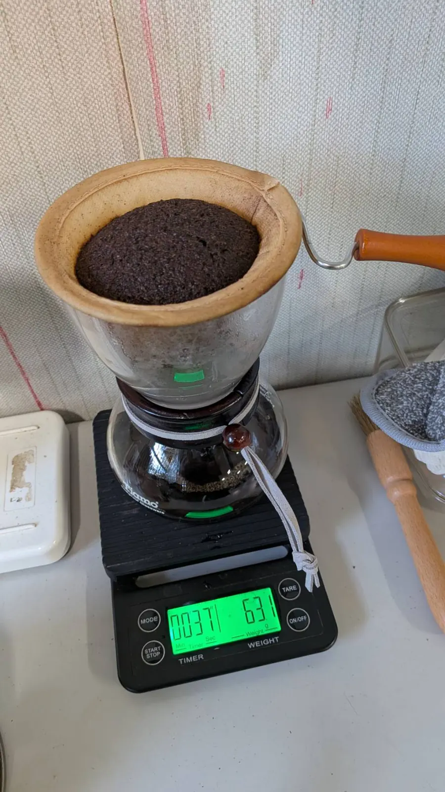

7 月 4 日星期六，第 41 屆校友暨在校生聯合音樂會《為伍》進入第二個週末團練日。下午的團練開始前，編號 7581 的翁啟榮學長先到嘉中人熟悉的大雅路「簡單火雞肉飯」吃午餐，再回到嘉中團練室，和校友、在校生一起把樂聲慢慢推進 8 月 8 日的舞台。
校友聯演的準備，往往不是從第一個音開始，而是從一條熟悉的路、一碗熟悉的飯開始。走回嘉中以前，先坐下來吃一碗火雞肉飯，像是替身體和記憶都暖個身。對許多校友而言，這些日常片段和舞台上的掌聲一樣重要，因為它們提醒我們：回來團練，不只是排曲子，也是回到嘉義、回到母校、回到那個曾經每天背著樂器進出社辦的自己。

下午的團練室裡，譜架、椅子、樂器和電扇一起回到熟悉的位置。低音銅管、木管、薩克斯風與打擊在同一個空間裡慢慢對齊，校友與在校生也在一次次合奏中重新找到彼此的呼吸。《為伍》的主題不只藏在五字頭主辦的名字裡，也藏在這樣的團練現場：有人從外地回來，有人仍穿著學生時代的節奏生活，有人負責開門、搬東西、煮咖啡，然後大家一起坐下來，把音樂接回去。

今天團練室裡還多了一壺咖啡。濾杯裡的咖啡粉慢慢膨起，熱水一圈一圈注下去，像另一種比較安靜的合奏：有人練長音，有人翻譜，有人聊天，有人等下一段進來。這些不是節目單上會印出的內容，卻是校友聯演之所以能一年一年延續下去的原因。
接下來的團練與演出時程
| 週末團練 | 7/5、7/11、7/12、7/18、7/19、7/25、7/26、8/1、8/2（六、日）13:30–17:00 |
|---|---|
| 演出週衝刺 | 8/4–8/7（二至五）18:30–21:30 |
| 正式演出 | 8/8（六）14:30．嘉義市政府文化局音樂廳 |
目前正式演出時間與地點已確定；演出當日更細部的流程與提醒，將依後續正式公告為準。接下來幾個週末，歡迎校友繼續歸隊，也歡迎親友在團練時間來探班，看看《為伍》如何在每一次排練裡慢慢成形。
完整團練時程請見 《為伍》團練時程公布。第 41 屆聯合音樂會《為伍》將於 2026 年 8 月 8 日 14:30 在嘉義市政府文化局音樂廳登場。